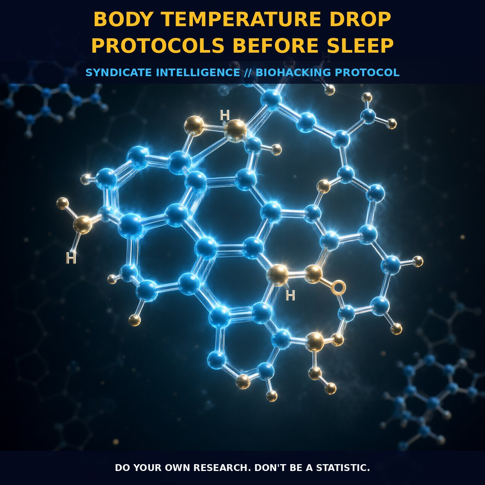

Optimizing Body Temperature Drop Before Sleep

1. The Mechanism
Body temperature regulation is a finely tuned physiological process orchestrated by the hypothalamus, the brain's central thermostat. The hypothalamus monitors core body temperature and maintains homeostasis by modulating peripheral blood flow, sweat production, and shivering. Prior to sleep, a slight drop in body temperature is natural as the body prepares for the nocturnal rest period. This drop is part of the circadian rhythm, and it is mediated by the release of melatonin, a hormone that also regulates sleep cycles. Melatonin production is stimulated by darkness, and its levels peak in the early hours of the morning, contributing to a lower body temperature as the body transitions into a state of relaxation and repair.
To achieve a body temperature drop before sleep, biohackers and nootropic users often employ various methods, including the use of exogenous compounds, environmental adjustments, and lifestyle modifications. For instance, exogenous compounds such as magnesium and glycine can have a thermoregulatory effect by modulating neurotransmitter activity and reducing muscle tension. Magnesium, in particular, has been shown to have a calming effect on the nervous system, which may contribute to a decrease in body temperature. Glycine, on the other hand, is known for its role in promoting relaxation and sleep quality. By altering the levels of these compounds, one can influence the body's temperature regulation mechanisms.
The body's temperature drop before sleep is supported by a complex interplay of biological systems, primarily involving the hypothalamus and the pineal gland. The pineal gland is responsible for melatonin production, which is crucial for sleep regulation and the circadian rhythm. Melatonin not only induces sleep but also contributes to the body's ability to lower its core temperature. Additionally, the body's peripheral blood vessels dilate during the night, allowing heat to dissipate more efficiently. This vasodilation is mediated by the release of nitric oxide (NO), which relaxes the smooth muscles in the blood vessel walls, facilitating the flow of warm blood to the surface of the skin and promoting heat loss.
Moreover, the body's metabolism slows down during sleep, reducing the amount of heat generated by cellular processes. This metabolic slowdown is regulated by the hypothalamus, which signals to various organs and tissues to decrease their activity levels. For instance, the liver, which is highly active during the day, slows its metabolic functions at night. This reduction in metabolic activity directly correlates with a decrease in body temperature. Additionally, the body's immune system also undergoes changes during the night, with a reduction in the production of pro-inflammatory cytokines, which can contribute to a state of thermoregulatory balance.
2. Protocol Implementation
To implement a body temperature drop protocol before sleep, biohackers and nootropic users can incorporate various strategies. One common approach is to use exogenous compounds such as magnesium and glycine, which have a calming effect on the nervous system and promote relaxation. Magnesium can be taken in the form of magnesium glycinate or magnesium threonate, which are well-tolerated and have a high bioavailability. Glycine can be taken as a powder or in capsule form, with doses typically ranging from 1-3 grams before bedtime.
Environmental adjustments, such as lowering the room temperature and using breathable bedding, can also contribute to a drop in body temperature. Aim for a room temperature between 60-67°F (15-19°C), as this range has been shown to promote sleep quality and thermoregulation. Additionally, reducing exposure to blue light from electronic devices in the evening can help stimulate the production of melatonin, further contributing to a body temperature drop.
Timing is crucial in the implementation of these protocols. Ideally, magnesium and glycine should be taken at least 30 minutes before bedtime to allow for proper absorption and onset of action. Environmental adjustments should be made in the hours leading up to sleep to ensure that the body is acclimated to the cooler environment. Regular adherence to these protocols can help establish a consistent circadian rhythm, promoting better sleep quality and optimal body temperature regulation.
Prostar Life Hack
To achieve a body temperature drop before sleep, take magnesium and glycine supplements 30 minutes before bedtime and ensure your room temperature is between 60-67°F (15-19°C). Reduce exposure to blue light from electronic devices in the evening.
[ AUTHOR: LEAD TECHNICAL RESEARCHER ]